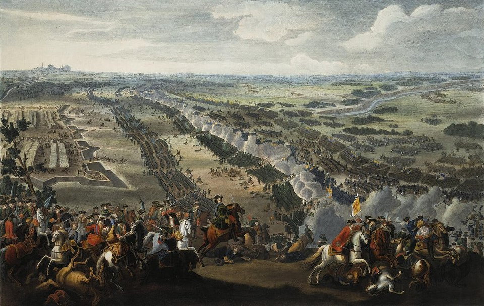
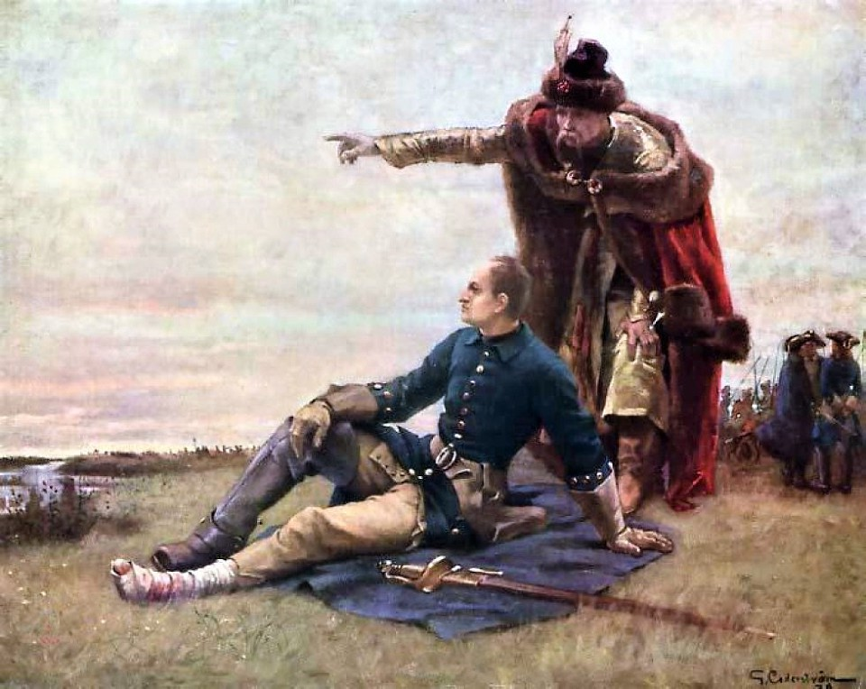
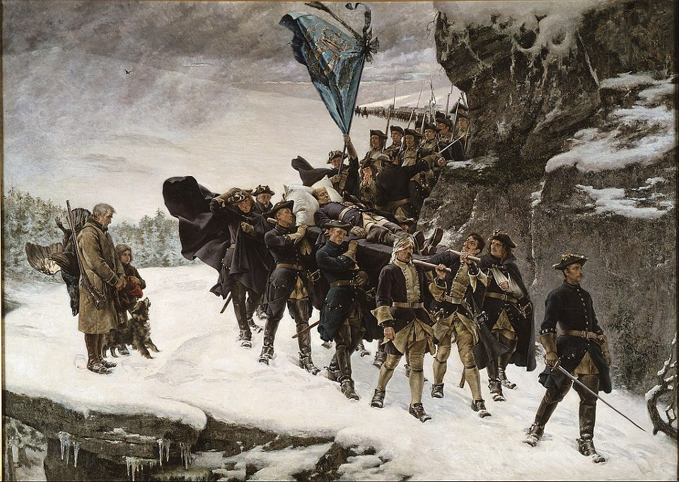
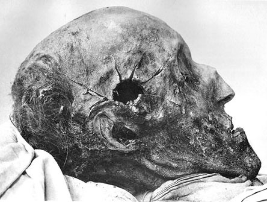
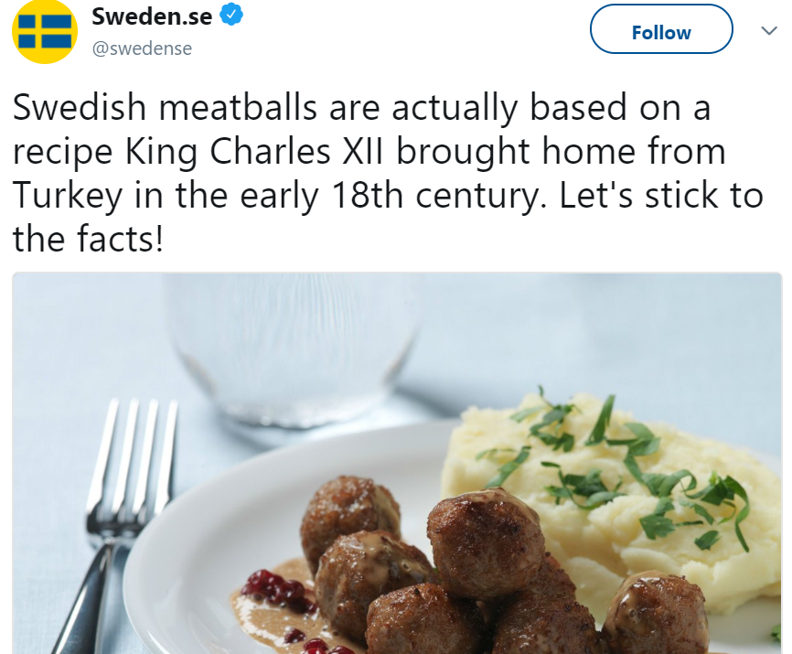
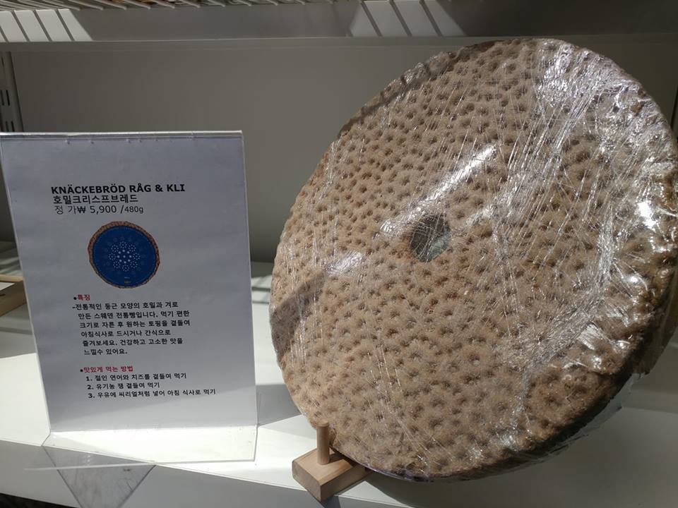
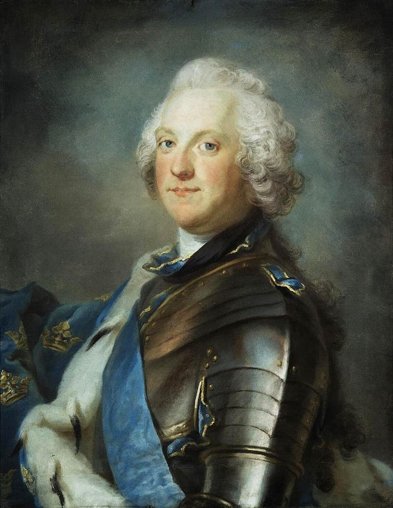
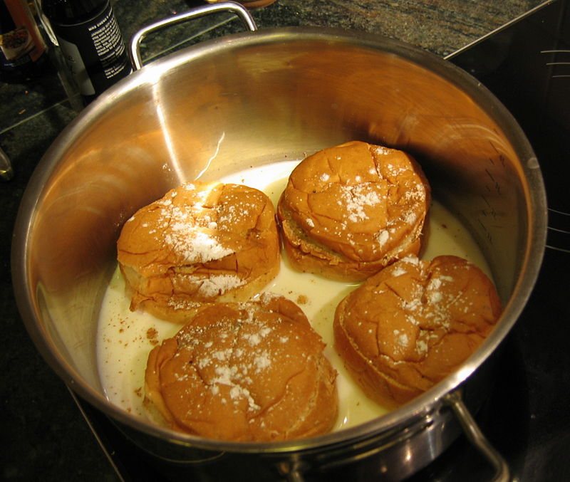
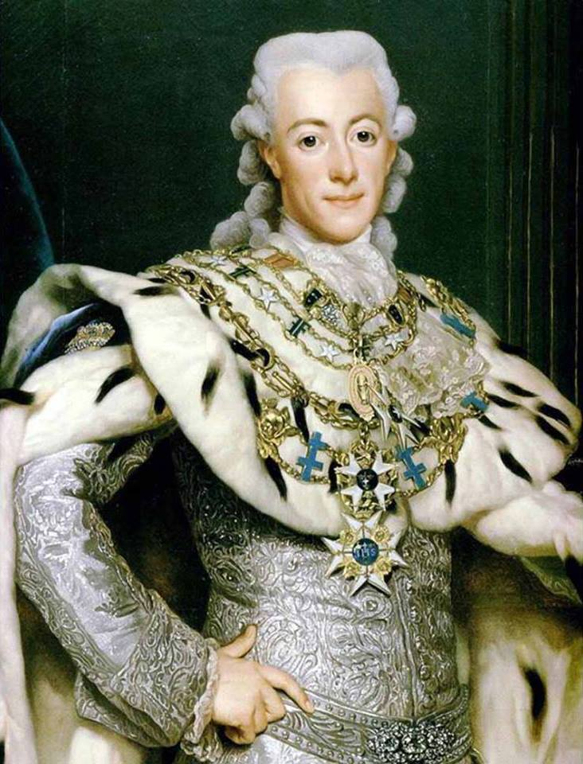

스톡홀름의 프랑스 왕 (1편) - 왕과 의회 그리고 미트볼
게시: 2018-06-25T06:30:00+09:00
이제 여러분은 약 4~5회의 포스팅에 걸쳐 나폴레옹의 껄끄러운 부하이자 인척이었던 장 베르나도트(Jean-Baptiste Jules Bernadotte)가 어떻게 현대 스웨덴 왕가의 초대 왕인 카알 14세(Karl XIV Johan)이 되었는지를 보시게 됩니다. 여러분들 대부분께서도 평민 하사관 출신의 프랑스 원수인 베르나도트가 프로이센과의 전쟁 때 포로로 잡힌 스웨덴 군인들을 잘 대우해준 덕분에 스웨덴에 좋은 인상을 남겼고, 때마침 스웨덴 왕에게 후사가 없자 후계자로 지명이 되었다는 이야기를 아실 것입니다. 하지만 많은 의문이 남습니다. 스웨덴 왕가에 설마 친척이 하나도 없었을 것 같지 않은데, 인척인 덴마크나 독일 귀족도 아니고 대체 왜 뜬금없이 프랑스의 장군을 왕으로 받아들였을까요 ? 그리고 기존 스웨덴 왕가에서는 왕족은 커녕 귀족도 아닌 베르나도트를 어떻게 생각했을까요 ? 가스코뉴 출신의 일개 사병에 불과했던 그가 어떻게 프랑스의 원수를 거쳐 뜬금없이 스웨덴의 왕이 될 수 있었을까 하는 이 흥미진진한 이야기의 시작은 뜻 밖에도 18세기 초 우크라이나에서 시작됩니다.
1709년 7월 우크라이나의 폴타바(Poltava)에서 스웨덴의 카알 12세(Karl XII)와 흔히 표트르 대제로 불리는 러시아의 표트르 1세(Pyotr I)가 맞붙습니다. 이때까지만 해도 유럽 대륙 북동부의 패권을 쥔 것은 전통의 강자 스웨덴이었고, 러시아는 낙후된 유럽의 변방에 불과했습니다. 그러나 이 전투에서 쾌승을 거둔 것은 표트르 1세였고, 이 전투를 통해 표트르 1세는 표트르 대제로 향후 추앙받는 미래를 닦게 됩니다. 이 전투에서 참패한 카알 12세는 오스만 투르크 제국이 지배하는 몰다비아(Moldavia) 지방으로 도주해야 했고, 거기서 오스만 투르크에게 5년간 억류되었다가 1715년에야 풀려나게 됩니다.

(폴타바 전투 장면입니다.)

(폴타바 전투 이후, 동맹이었던 우크라이나 카자흐 귀족 마제파(Ivan Mazepa)와 드네프르 강변에서 퇴각로를 논의하는 카알 12세입니다.)
이 폴타바 전투를 계기로 스웨덴은 1700년~1721년 사이에 치러진 대북방전쟁에서 북방의 패권을 러시아에게 빼앗기고 점차 몰락하게 됩니다. 이 전쟁에서 스웨덴은 많은 것을 잃었습니다. 특히 간신히 스웨덴으로 돌아온 카알 12세는 1718년 11월 당시 덴마크 영토이던 노르웨이의 요새를 공격하다가 어디선가 날아온 탄환에 머리를 정통으로 맞고 즉사했는데, 이때 그는 자식은 커녕 결혼도 하지 않은 상태였습니다. 빈자리가 된 스웨덴 왕위에 대한 계승권은 그의 여동생 울리카(Ulrika Eleonora) 뿐만 아니라 홀슈타인-고톱(Holstein-Gottorp) 가문의 카알 프레드릭(Karl Fredrik)에게도 있었습니다. 거듭된 패전에 이런 사정까지 있다보니 결국 여왕이 된 울리카는 즉위의 댓가로 스웨덴 의회(Riksdag of the Estates, 스웨덴어로는 Riksens stander)에게 1719년 정부 기구법(Instrument of Government of 1719 스웨덴어로는 1719 ars regeringsform)이라는 문서에 서명을 해줘야 했습니다. 이 법안은 일종의 스웨덴 헌법으로 작용했고, 주된 내용은 그 이전까지 전제적 권력을 쥐고 있던 스웨덴 국왕의 권력을 대폭 제한하는 것이었습니다.

(노르웨이의 전장에서 머리에 총상을 입고 사망한 카알 12세의 후송 장면입니다.)

(1917년에 이루어진 카알 12세의 부검 때 찍힌 사진입니다. 그의 죽음에 대해서는 노르웨이 요새에서 발사된 총알에 의한 것이다 아니다 포도탄이었다 아니다 그의 지휘에 불만을 품은 부하들이 옆에서 쏜 것이다 등 별의별 소문이 많았습니다. 그런 괴소문의 진위를 밝히기 위해 그의 시신은 1746년, 1859년, 1917년에 무려 3번이나 부검되었는데, 그 결과 밝혀진 것은 느린 속도의 탄환에 저격당한 것이고, 따라서 근거리의 부하가 아니라 노르웨이 요새에서 날아온 탄환에 의한 것이라는 것이었습니다.)
결과적으로 보면 스웨덴에게는 잘 된 일이 될 수도 있습니다. 패권은 잃었어도 입헌 군주국으로서 근대화의 길을 닦은 셈이니까요. 또한 카알 12세가 오스만에 머물던 동안 투르크인들에게 배워온 커피와 미트볼은 맛없기로 유명한 스웨덴의 식생활에 크게 이바지했습니다. 최근에 스웨덴 정부가 공식적으로 '스웨덴의 대표 음식인 미트볼은 사실 카알 12세가 오스만 투르크에서 배워온 것이다'라고 밝히면서 스웨덴 사람들에게 큰 충격을 주었지요.

(스웨덴 정부 공식 트위터 계정에서 발표한, '스웨덴 대표 요리인 미트볼은 카알 12세가 터키에서 가져온 것이다 사실을 직시합시다'라는 트윗은 스웨덴 우익들에게 꽤 큰 충격을 주었다고 합니다. 저 스웨덴 미트볼은 이케아 매장의 카페테리아에 가시면 드실 수 있습니다. 맛이요 ? 그냥 X뚜기 3분 미트볼과 별로 다르지 않습니다.)

(우리에겐 미트볼이 평범한 맛일지 몰라도 이런 딱딱한 호밀빵을 먹고 살던 바이킹의 후예들에게는 '드넓은 드네프르 강변 초원에서 살찐 암소들이 뛰노는 맛'이었을지 모르겠습니다. 이건 고양 이케아에 갔다가 이 knackerbrod(비스킷 스타일의 딱딱한 호밀빵)을 파는 것을 보고 찍은 사진입니다. 원래 페북에 올렸었는데, 한 분이 저 왼쪽 표지를 보고 댓글에서 '맛있게 먹는 방법이라니, 첫줄부터 거짓말 !'이라고 쓰신 것을 보고 빵터졌습니다. 김한솔님 고맙습니다.)
울리카 여왕은 처음에는 남편 헤세-카셀 백작(Landgrave of Hesse-Kassel)을 왕으로 승격시키고 남편과의 공동 통치를 원했습니다. 그러나 스웨덴 의회(Riksdag)과의 갈등 때문에 자의반 타의반으로 결국 1년 뒤인 1720년 남편에게 아예 양위를 해버렸습니다. 이로써 17세기 중반부터 스웨덴을 통치해온 팔라틴-츠바이브뤼켄(Palatinate-Zweibrucken) 왕가의 혈통은 끊어지고 독일계인 헤세-카셀 가문이 스웨덴 왕가를 차지하게 되었습니다. 이렇게 와이프를 잘 둔 덕분에 스웨덴 국왕에 오른 프레드릭 1세(Fredrik I)도 자식없이 사망했기 때문에, 1751년 그의 친척이었던 독일계 홀슈타인-고톱(Holstein-Gottorp) 가문의 아돌프 프리드리히(Adolf Friedrich)가 스웨덴 국왕 아돌프 프레드릭(Adolf Fredrik)이 되어 홀슈타인-고톱 가문의 치세가 시작되었습니다.
헤세-카셀 가문이 스웨덴 국왕이 된 것도 폴타바 전투에서 스웨덴을 패배시킨 러시아와 1719년 정부 기구법을 강요하여 통과시킨 스웨덴 의회였듯이, 홀슈타인-고톱 가문의 아돌프 프레드릭을 스웨덴 왕위에 올린 것도 결국 러시아와 스웨덴 의회였습니다. 1741–43년의 스웨덴-러시아 전쟁에서 이번에는 러시아의 여걸 엘리자베타(Elizaveta Petrovna) 대제에게 패배한 스웨덴에서는 당시 의회에서 권력을 잡고 있던 모자당(the Hats, 스웨덴어로는 Hattarna)이 패전의 책임추궁을 피하기 위해 왕위 계승권 문제를 이슈화시켰습니다. 여기에 러시아 엘리자베타 대제가 끼어들었습니다. 패배한 스웨덴과 종전 협상을 하던 엘리자베타는 과연 여걸답게, 스웨덴으로부터 빼앗은 핀란드 영토 대부분을 되돌려 주겠다고 제안했습니다. 대신 그녀의 후계자인 표트르 3세(Pyotr III)의 삼촌인 홀슈타인 공 아돌프 프리드리히를 스웨덴 국왕 후계자로 지명하라는 것이었지요. 핀란드 땅을 돌려주는 대신 아예 스웨덴 전체를 쥐고 흔들겠다는 통큰 구상이었습니다. 국가보다는 당장 세금이 나올 영토와 자신들의 특권이 가장 중요했던 스웨덴 의회는 그 미끼를 덜컥 물어버렸습니다.

(아돌프 프레드릭입니다. 그는 왕위에 오른지 20년만인 61세의 나이로 사망했는데, 전해지는 바에 따르면 그의 사인은 과식이었다고 합니다. 그가 마지막으로 먹었던 식사는 랍스터, 캐비어, 사우어크라우트, 훈제 청어와 샴페인이었고, 거기에 덧붙여 그가 끔찍하게 좋아했던 스웨덴식 달콤한 푸딩인 셈라(Semla)를 뜨거운 우유에 적신 것을 무려 14인분을 먹었다고 합니다.)

(아돌프 프레드릭을 사망에 이르게 한 헤트베크(Hetvägg)는 셈라(Semla)에 뜨거운 우유를 부어먹는 디저트입니다. 부먹을 즐기는 것을 보니 스웨덴 사람들 야만인이네요. 찍먹이여 영원하라 !)
이렇게 의회와 러시아 덕분에 왕위에 오른 아돌프 프레드릭은 그들의 기대대로 유약한 왕이 되었습니다. 대부분의 권력이 의회에 있고 나라 전체가 러시아 눈치를 보던 상황에서, 허울 뿐인 왕이었던 그는 대부분의 시간을 당시 유행하던 코담배갑(snuffbox)를 만들며 보냈다고 합니다. 그런 그도 의회로부터 권력을 다시 가져오려고 간간히 노력을 하긴 했습니다. 그의 왕비인 루이자 울리카(Louisa Ulrika)가 의회에 대적하여 친위 쿠데타를 일으키려고 했으나 사전에 발각되어 왕비는 폐위되고, 국왕 아돌프 프레드릭은 '두 번 다시 이런 일이 있을 경우 퇴위하겠다'라는 서약을 해야 했습니다. 1768년에는 아돌프가 의회 권력에 저항하여 칙령에 서명을 거부하는 12월 위기(스웨덴어로 Decemberkrisen)를 일으키기도 했습니다만, 그 결과로 의회로부터 받아낸 것은 그야말로 용돈 인상 정도였습니다.
그런 권력 없는 스웨덴 국왕이 권력을 되찾은 것은 그의 아들 구스타프 3세(Gustav III) 때였습니다. 아버지가 디저트를 너무 많이 드셔서 돌아가신 1771년 왕위에 오른 구스타프 3세는 바로 다음해인 1772년 과격한 방법으로 다시 전제 군주가 됩니다. 1718년 카알 12세의 전사 이래, 1719년 정부 기구법을 통해 실권을 장악했던 스웨덴 의회의 권력을 친위 쿠데타를 통해 끝장낸 것입니다. 정작 이렇게 귀족들로부터 무력으로 권력을 되찾은 구스타프 3세는 자신이 계몽 군주임을 표방하여, 볼테르와 교류를 가지면서 여러가지 개혁 작업을 실시했습니다. 또한 1790년 쌍방에서 500척의 군함을 동원한 엄청난 규모의 스벤스크순드(Svensksund) 해전에서 러시아 해군을 대파하는 기염을 토하며 스웨덴이 아직 무시당할 수준으로 찌그러든 것은 아니라는 것을 입증해보였습니다.

(구스타프 3세입니다. 이 양반의 자코뱅에 대한 증오심은 살짝 지나쳤음을 보여주는 일화가 있습니다. 만화 '베르사이유의 장미'에 등장하는 페르젠의 실제 모델인 악셀 폰 페르센이 프랑스군과 함께 미국 독립 전쟁에 참전했었습니다. 폰 페르센이 그 공로로 조지 워싱턴으로부터 훈장을 받자, 구스타프 3세는 폰 페르센에게 '국왕에 대해 반란을 일으킨 자들이 준 훈장은 패용하지 말라'는 명령을 내렸다고 합니다.)
하지만 그 대승리로 인해 스웨덴이 얻은 것은 아무것도 없었습니다. 게다가 1789년 프랑스 대혁명이 일어나자, 자칭 계몽 군주였던 그는 이런 위험한 혁명분자들, 즉 자코뱅(jacobin)들에 대한 격렬한 증오에 사로잡혀 자유 언론을 탄압하고 별 직접적인 상관도 없는 프랑스를 적대시하며 유럽 각국의 왕족들과 연합하여 반프랑스 동맹의 열혈 멤버가 되었습니다. 그렇지 않아도 쿠데타로 권력을 빼앗은 왕을 미워하던 스웨덴 귀족들은 쓸데없이 남의 나라 일에 배놔라 감놔라 하며 국가와 귀족들을 위험에 몰아넣는 구스타프 3세에 대해 더욱 반감을 가지게 되었습니다. 그리고 그런 반감은 결국 1792년, 스웨덴 왕립 오페라 하우스에서 열린 가장 무도회에 참석했던 구스타프에 대한 암살로 터져나옵니다. 근거리에서 등 뒤에 권총을 맞은 구스타프 3세는 총을 맞는 순간 다음과 같이 완벽한 프랑스어로 외쳤다고 합니다.
Ah! Je suis blessé, tirez-moi d'ici et arrêtez-le (아 ! 난 부상을 입었다, 날 여기서 끌고나가고 저 자를 체포하라 )
그는 이랗게 암살범들을 진압하였으나, 총을 맞은지 13일만에 패혈증으로 결국 사망했는데 마지막으로 남긴 말은 다행히도 스웨덴어였다고 합니다.
Jag känner mig sömnig, några ögonblicks vila skulle göra mig gott (졸립구나, 조금 자고 나면 괜찮아질거야)
그의 뒤를 이은 것은 그의 아들 구스타프 4세 아돌프(Gustav IV Adolf)였습니다. 당시 14살로 아직 미성년이었던 그는 삼촌 카알(Karl) 공작의 섭정 하에 성장했는데, 그의 성격을 잘 보여주는 것은 그가 숙적이자 무시할 수 없는 힘센 이웃 러시아의 대공녀인 알렉산드라 파블로브나(Alexandra Pavlovna)와의 결혼을 거절했던 사건이었습니다. 1796년, 섭정인 카알 공작은 이제 막 성인이 되기 직전이었던 구스타프 4세의 미래를 위해 러시아와의 정략 결혼을 주선했습니다. 그러나 구스타프 4세는 독실한 루터파 개신교 신자였고, 자신의 왕비가 러시아 정교를 버리고 루터파로 개종하지 않는다면 결혼할 수 없다고 버티어 이 혼사를 망쳐놓았습니다. 이것을 본 스웨덴 귀족들은 오히려 기뻐했습니다. 드디어 스웨덴에 검소하며 신앙심이 독실한 평범한 왕이 왕좌에 앉게 되었다고 생각했기 때문이었습니다. 물론 그들은 크게 착각하고 있었습니다.
To be continued...
Source : The Life of Napoleon Bonaparte by William M. Sloane
https://en.wikipedia.org/wiki/Instrument_of_Government_(1809)
https://en.wikipedia.org/wiki/Instrument_of_Government_(1719)
https://en.wikipedia.org/wiki/Gustav_IV_Adolf_of_Sweden
https://en.wikipedia.org/wiki/Charles_XIII_of_Sweden
https://en.wikipedia.org/wiki/Charles_XIV_John_of_Sweden
https://en.wikipedia.org/wiki/Gustav_III_of_Sweden